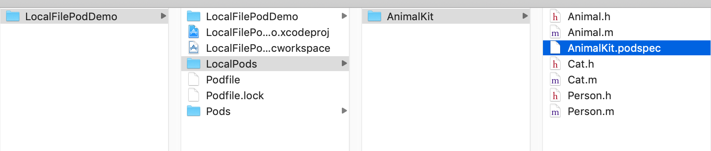

本地Pod
使用Pod可以管理本地文件，podspec并不提交给CocoaPod。注意，实际项目不一般不会这样操作，写此仅为了展示Pod支持通过File引用的方式。
1.新建Single-View Application: LocalFilePodDemo 为了规范，我们在此工程目录下新建一LocalPods，以存放本地库文件。

@interface Animal : NSObject
- (void)eat;
- (void)drink;
- (void)think;
@end
@implementation Animal
- (void)eat {
NSLog(@"%@ %@", NSStringFromClass(self.class), NSStringFromSelector(_cmd));
}
- (void)drink {
NSLog(@"%@ %@", NSStringFromClass(self.class), NSStringFromSelector(_cmd));
}
- (void)think {
NSLog(@"%@ %@", NSStringFromClass(self.class), NSStringFromSelector(_cmd));
}
@end
@interface Cat : Animal @end
@implementation Cat @end
@interface Person : Animal @end
@implementation Person @end
使用'pod spec create AnimalKit'新建AnimalKit.podspec，并添加内容：
Pod::Spec.new do |spec|
spec.name = "AnimalKit" # 注意，这个name就是被用来在Podfile中引用的名字：pod 'AnimalKit', :path => '/Users/.../AnimalKit'
spec.platform = :ios, '9.0'
spec.version = "1.0.0"
spec.homepage = "/Users/banma-623/Desktop/ForDelete/LocalFilePodDemo/LocalPods/AnimalKit"
spec.summary = "nimalKit summary: Animal behaviors encapsulate"
spec.license = "MIT"
spec.author = { "刘威振" => "liuxing8807@126.com" }
spec.source = { :git => "file:/.", :tag => "#{spec.version}" }
spec.source_files = "*.{h,m}"
spec.exclude_files = "AnimalKit.podspec"
end
为了使用上面的podspec生效，需进入AnimalKit目录：
git init
git add *
git commit -m "init"
git tag 1.0.0 # 因为指定的source为0.0.1，它必须和git的tag保持一致
现在可以验证AnimalKit.podspec是否合法：
pod spec lint --allow-warnings AnimalKit.podspec # 这里的BMUIAttributeFactory.podspec可以省略
通过后就可以使用了，在工程的Podfile中引入：
platform :ios, '9.0'
workspace 'LocalFilePodDemo'
use_frameworks!
inhibit_all_warnings!
target 'LocalFilePodDemo' do
pod 'AnimalKit', :path => './LocalPods/AnimalKit'
end
调用pod install, Done.